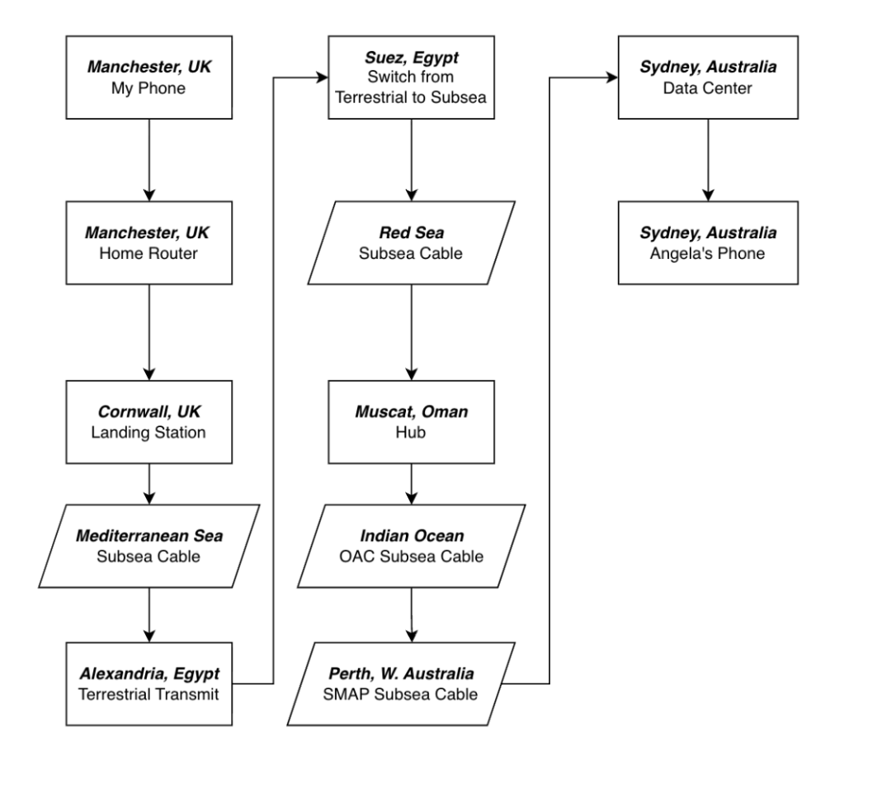

Hello, Australia: The Anatomy of a 10,000-Mile FaceTime Call
Something I’ve been wondering lately as I study my CompTIA Net+ is how long distance video and audio calls work fairly seamlessly, especially when I can remember being a kid in the 2000s and Skype calls being fairly unstable and buggy in a MAN (Metropolitan Area Network) just with my friends playing video games. Since I’m at a fairly early point in my career, having just finished Harvard CS50 and preparing for my MSc as well as Helpdesk roles, this question posed an interesting challenge to investigate.
I will try to explain key concepts I discovered in a way that non-technically minded persons can still understand and learn about global communications. Here are my findings, I hope you enjoy the read and find it as interesting as I did!
// Intro
When I open Facetime in the UK, and call my girlfriend in Sydney, a simple “Good Morning” has to cross continents, oceans and hemispheres. To me, it seems like magic. To a network engineer, it is a brutal and high-speed race against the laws of physics.
Before we dive in to map the journey to Australia or answer any questions, for those who haven’t studied networking yet, I will do my best to quickly explain the concept of data packets, headers and bandwidth concerning how information is sent.
// Data Packets
Think of the internet like the postal service. If you have a massive 1,000 page book to send across the world, your first instinct is to pack it into one big cardboard box and ship it.
But imagine if that single box gets lost at sea, damaged or dropped on a conveyor belt. The entire delivery fails. To get that book to its destination, you would have to reprint all 1,000 pages and ship the whole massive box all over again.
On the internet we avoid this nightmare by ripping the pages out, putting each single page into its own small envelope, and mailing them all at once. Those individual envelopes are called Data Packets.
Sending information this way solves two massive problems:
- Fixing mistakes quickly (packet loss): If 999 envelopes arrive safely in Sydney but envelope #45 gets dropped in the mud along the way, we don’t need to resend the whole book, just that one page. If for some reason we can’t re-send that page, chances are the book is still fairly comprehensible without it, unless we’re really unlucky. This holds true for a website, where we could be missing an image or paragraph of text, but the general website still works.
- Avoiding traffic jams: Big boxes clog up the system. Small envelopes can weave through different mail trucks, planes, and sorting centers dynamically, utilising every bit of available space in the network.
// The Packet Header
Every single packet (or envelope) has a digital label slapped onto it called a Header. This header contains crucial information, including:
- Who sent it (My IP address in the UK)
- Where it’s going (Angela’s IP address in Sydney)
- The page number (e.g. "This is piece #452 of the video")
Because of the header, the receiving phone knows exactly how to line up all the arriving pieces and glue them back together in the correct order.
// Bandwidth
People often think of Bandwidth as internet speed, but it’s actually about width. Think of your internet connection like a water pipe. Bandwidth isn’t how fast the water flows, it’s how wide the pipe is.
- Low bandwidth is a narrow straw - only a few packets can squeeze through at a time.
- High bandwidth is a massive firehose - millions of packets can rush through simultaneously, allowing for crisp, HD video.
// BACK TO THE TOPIC: WHAT HAPPENS WHEN I DIAL?
// Phase 1: Managing the Data (The OS and Encapsulation)
Before anything actually leaves my phone, my voice and video have to be digitised. Apple uses advanced codecs like H.264 or H.265 (HEVC) for video and AAC-ELD for audio to compress massive raw data into tiny, manageable pieces.
Facetime uses UDP (User Datagram Protocol) rather than TCP (Transmission Control Protocol). If we used TCP, every single lost frame of video would require a retransmission request. By the time it arrived, the conversation would have moved on. UDP just streams the packets relentlessly. If a packet drops, your screen glitches for a millisecond, but the live conversation keeps moving.
// Phase 2: The Physical Journey (The Deep Sea and Fiber Optics)
Once the packets leave my home router, they hit the backbone of the internet. They aren't bouncing off satellites in space. Instead, they travel along submarine fiber optic cables resting on the dark ocean floor. The traffic might route through Egypt and the Red Sea, snake around India, pass Singapore, and finally dive down the eastern coast of Australia to drop into a data center in Sydney.
Because the signal travels through glass fiber at roughly 200,000km/s, the entire 20,000km trek through ocean abysses and across continents takes roughly 100 milliseconds one way. Light also degrades over distance, requiring underwater optical amplifiers powered by high-voltage copper lines running inside the cable every 50 to 80 kilometers.

Both of these massive data streams pass each other on the exact same fiber optic lines at the speed of light without colliding. Her Australian ISP might have a cheaper and faster routing agreement that sends her outbound traffic across the Pacific Ocean, hitting landing stations in Hawaii and LA, crossing the continental United States via terrestrial fiber, and jumping the Atlantic to hit the UK from the west.
// EXPANDED MAP TRAJECTORY:
UK: My phone pushes data through my router, running via the local exchange to the UK’s main international subsea landing stations in Cornwall. The data dives into the Atlantic Ocean, wraps past Portugal, and enters the Mediterranean via the Strait of Gibraltar.
The Mediterranean and Egyptian Bottleneck: The pulses dash across the Mediterranean seabed to Alexandria, Egypt. The data exits the ocean here and runs along highly guarded terrestrial fiber cables buried across Egypt, following the Suez Canal down to Suez.
The signal then dives back underwater into the Red Sea, tracing past Saudi Arabia and Yemen out into the Gulf of Aden.
The Middle East Hub (Oman): The packets land in Muscat, Oman, a massive digital crossroads linking Europe to Asia. From Muscat, my data hops onto a specialized deep-sea superhighway like the Oman Australia Cable (OAC) dipping directly across the floor of the Indian Ocean.
The Indian Ocean and Perth: The pulses of light travel completely uninterrupted for nearly 10,000km across the vast, dark floor of the Indian Ocean, landing at the beach landing station in Perth, Western Australia.
Australia: From Perth, the signal hops onto Australia’s newly active SMAP subsea cable (Sydney-Melbourne-Adelaide-Perth). It dives back into the ocean, hugging the southern coast of Australia before rocketing through the Great Australian Bight, passing Adelaide and Melbourne and turning north to land in Sydney where it hits the local tower or Wi-Fi framework.
// FaceTime or Traditional Telephone?
If I were to pick up a landline or make a standard international phone call to Sydney today, the technology under the hood would look entirely different from FaceTime. It represents the classic networking battle: Circuit Switching vs. Packet Switching.
Traditional Phone Calls (Circuit Switching): Relies on the Public Switched Telephone Network (PSTN) to lock down a continuous, dedicated lane all the way from my house to Sydney. For the entire duration of the call, that specific connection belongs to us alone, proving very expensive and inefficient.
FaceTime (Packet Switching): Doesn't care about private lanes; it uses the standard, open internet. As we established with our postal envelopes, your voice and video are chopped into millions of data packets and thrown onto the global internet highway alongside Netflix streams, emails, and everyone else's data, making it highly efficient and virtually free.
// 2000s Skype Compared to Now
Remembering how unstable local Skype calls were in the mid-2000s compared to global calls today highlights exactly how far infrastructure has evolved:
- P2P Architecture vs. Edge Infrastructure: Early Skype forced home computers to act as mini-servers, throttling local hardware. FaceTime offloads this processing to robust edge data centers.
- Asymmetric DSL Speed Bottlenecks: Legacy home connections choked on tiny, asymmetric upload limitations (often under 512 Kbps). Today's synchronous fiber loops offer deep lanes for video transfer.
- Legacy Compression Algorithms: Old codecs required massive pools of raw throughput to assemble basic, low-resolution streams. Masterfully built engines like H.265 pack vibrant video arrays into tight, lightweight footprints.
// Latency, Jitter, and Dropped Frames
The Math of Latency: Inside a glass fiber-optic cable, light slows down by about 30%, traveling at roughly 200,000km/s. The physical cable distance from the UK to Sydney sits around 17,000km to 20,000km depending on the active routing layer. A standard Round Trip Time (RTT) lands between 265ms to 280ms, generating that subtle conversational overlap.
The Causes of Glitches: Instabilities typically emerge from three separate environments: Jitter (the variance in packet arrival times across routers), the "Last Mile" Bottleneck (Wi-Fi band switching or localized cellular tower handover dropouts), and Route Flapping (abrupt BGP path recalculations if an edge node encounters unexpected downtime).
// Conclusion
Investigating this mapping turned a routine, everyday piece of magic into a masterclass in global engineering. Going from the foundational programming concepts of CS50 to tracing the physical realities of BGP routing and subsea repeaters has completely reframed how I look at modern networks. As I step into my Master’s program and prepare for IT Helpdesk roles, this is exactly the kind of structural problem-solving I want to bring to the table.
_ EOF_LOG_